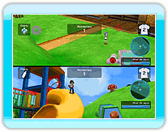

14 |
Dos jugadores |
 |
|
Cuando selecciones Dos jugadores en el menú principal, aparecerá la pantalla de selección de reglas. Puedes jugar una Batalla real o un Duelo a muerte en este modo de dos jugadores.
La pantalla se dividirá horizontalmente en dos secciones, una para cada jugador.
Con dos jugadores, necesitas un Wii Remote y un Nunchuk o un Classic Controller para el jugador 2.
*Solo se puede seleccionar dos jugadores si hay un mando de jugador 2 conectado a la consola Wii. *En el modo de dos jugadores hay un número limitado de jugadores IA y de mapas que se pueden seleccionar. |
 |
 |
 |